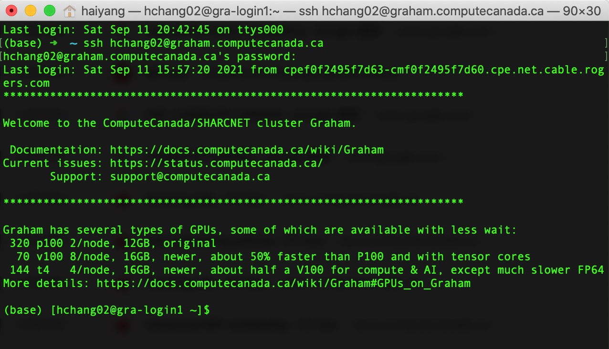
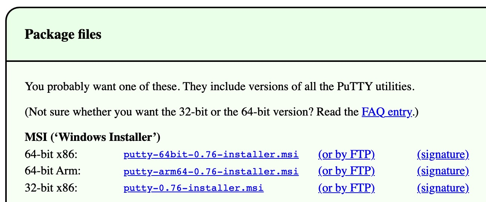
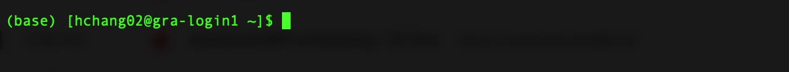
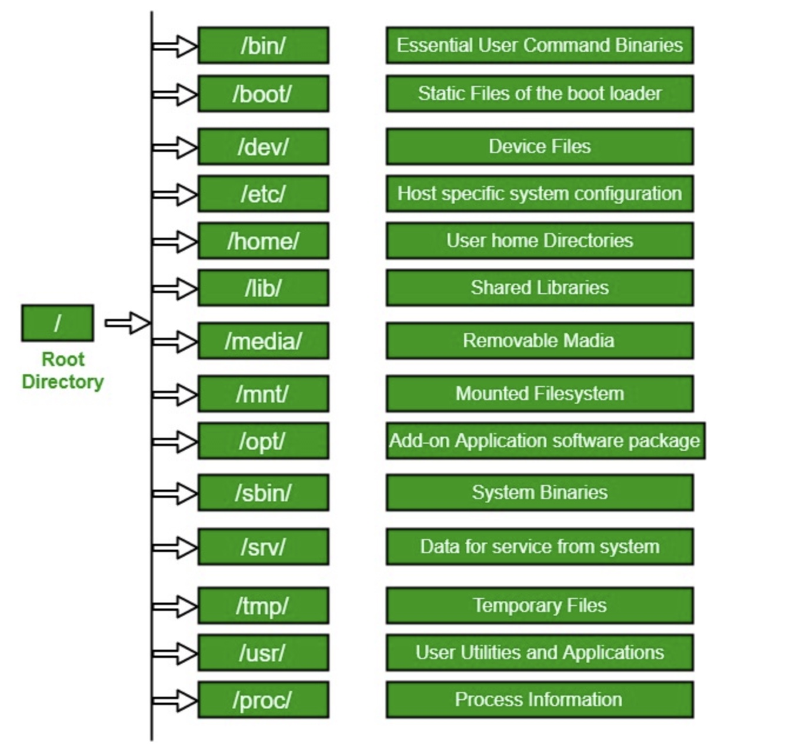

BIOL*3300 Lab1 F21
Getting started with UNIX on Compute Canada
Prerequisites
You should already have a Compute Canada Graham account.
For Macs - Logging in
- Open a terminal (under Applications/Utilities on a Mac).
- Type your graham account into the terminal:
where 'username' is replaced with your username. Press return.ssh username@graham.computecanada.ca - Type in your password. Note no characters will display when you are typing. Press return after your password and all the following commands.

For Windows - Logging in
Windows needs a terminal to connect with, we recommend you install PuTTY
- Nevigate to package files and choose a version of .msi link based on your operating system.
 - Download PuTTY with default options (left click on next).
- Set Putty Host Name field as following: Enter the server name in Host Name, host name is your Graham account.
- Make sure the Connection type is SSH.

- Click Open and will ask you for your user name and password. Note no characters will display when you are typing password. Press return after your password and all the following commands.

Introduction to Unix and Command Line
Why Unix?
What is the command line?
- Command line interface is a tool into which one can type commands to perform tasks.
- The user interface that accepts the typed responses and displays the data on the screen is called a shell.
- An all-text display (most of the time your mouse doesn’t work).
Getting started with your shell
After logging into Compute Canada Graham account, system messages are often displayed, followed by the "prompt". A prompt is a short text message at the start of the command line and ends with $ in bash shell, commands are typed after the prompt.

For now, we will enter single commands through the terminal. If you lose the command prompt (such as a greater than sign >), press control and c at the same time. This is an "interrupt" command that will likely bring the prompt back.
Command line basics
First some basics - how to look at your surroundings. We use pwd command (for print working directory), which is to find out what the path is for the directory we are sitting in.
pwd
We use the ls command (for list), we can see what directories and files are in the current directory we are sitting in. A single dot (.) refers to the current directory. If you are in this directory, you can omit it.
ls .
ls
Each command can act as a basic tool, or you can add 'options' or 'flags' that modify the default behavior of the tool. Let’s try one, and see what the man page for the 'list files' command 'ls' is like.
ls -l
how do I know which options do what?
man ls
Use space to move down and q to quit this manual page.
The Unix directory structure
Your computer stores file locations in a hierarchical structure. You are likely already used to navigating through this stucture by clicking on various folders (also known as directories) in a Windows Explorer window or a Mac Finder window. Just like we need to select the appropriate files in the appropriate locations there (in a GUI), we need to do the same when working at a command-line interface. What this means in practice is that each file and directory has its own "address", and that address is called its "path". Here is an image of an example file-system structure:

Usually, /home is where the user accounts reside, ie. user’s "home" directory. For example, for a user that has a username of "hchang02": their home directory is /home/hchang02. It is the directory that a user is located after starting a new shell or logging into Compute Canada Graham server.
Moving around
The filesystem you’re working on is like the branching root system of a tree. The top level, right at the root of the tree, is called the 'root' directory, specified by / which is the divider for directory addresses, or 'paths'. We can also move into the directory containing the file we want to work with by using the cd command (change directory).
Go to the root directory, list directories and files, and print working directory:
cd /
ls
pwd
Go back to your home directory, you have three ways: (Note you should replace username to your username)
cd /home/username
pwd
The tilde ~ is a short form of a user’s home directory.
cd ~
pwd
No effect? that's because by itself it sends you home.
cd
pwd
Now if you run ls command, you will see a directory called scratch. Note in the following labs, we will run all the commands and store all the files in this directory. The scratch filesystem on Compute Canada is intended as temporary, fast storage for data being used during job execution. And we will talk more when we introduce Compute Canada officially.
ls
cd scratch
ls
pwd
You can always check your current directory with pwd.
Create and Destroy
Let's create a directory "Biol3300" in your scratch directory with the command mkdir (for make directory):
mkdir Biol3300
cd Biol3300
pwd
Two dots .. refers to the directory one level up. Directories can be deleted with rmdir (for remove directory):
cd ..
ls
rmdir Biol3300
ls
Let's create a directory "Lab1" inside the directory "Biol3300" with the option -p. The option -p tells unix to make the directory and if required all parent directories.
man mkdir
mkdir -p Biol3300/Lab1
cd Biol3300/Lab1
pwd
cd ../..
The command line is a little more forgiving when trying to delete a directory. If the directory is not empty, rmdir will give us an error.
rmdir Biol3300
Let's go back to our Biol3300 directory. The echo command simply "echoes" back the contents you provide then we redirect (>) them to a file.
cd Biol3300
echo 'Hello, world!' > first.txt
Command cat means 'concatenate'
cat first.txt first.txt first.txt > second.txt
cat second.txt
Another standard useful program for viewing the contents of a file is less. This opens a searchable, read-only program that allows us to scroll through the document:
less second.txt
To exit the less program, press the "q" key.
To create a file, you can also use touch, which creates empty files.
touch newfile.txt
less newfile.txt
By convention files start with lower case letters and directories start with upper case.
Absolute vs relative path
There are two ways to specify the path (address) of the file we want to do something to:
- An absolute path is an address that starts from an explicitly specified location: either the "root" / or the "home" ~/ location. (Side note, because we also may see or hear the term, the "full path", is the absolute path that starts from the "root" /.)
- A relative path is an address that starts from wherever directory in which we currently are.
Relative path (start here, down through one level up, Biol3300 and Lab1):
pwd
cd ../Biol3300/Lab1/
pwd
Absolute path (start at root, take steps): (Note you should replace username to your username)
pwd
cd /home/username/scratch/Biol3300/Lab1/
pwd
Copying, moving, and renaming files
The commands cp and mv (copy and move) have the same basic structure. They both require two positional arguments: the first is the file we want to act on, and the second is where we want it to go (which can include the name we want to give it).
To see how this works, let’s make a copy of "first.txt" in the Biol3300 directory:
cd ..
pwd
ls
cp first.txt first_copy.txt
ls
By just giving the second argument a name and nothing else (meaning no path in front of the name), we are implicitly saying we want it copied to where we currently are.
To make a copy and put it somewhere else, like in our subdirectory "Lab1", we could change the second positional argument using a relative or absolute path. (Remember a path is "relative" because it starts from where we currently are):
ls Lab1/
cp first.txt Lab1/first_copy.txt
ls Lab1/
The mv command is used to move files. Let’s move the "newfile.txt" file into the "Lab1" subdirectory:
mv newfile.txt Lab1/
ls
ls Lab1/
To copy it to that subdirectory but keep the same name, we could type the whole name out, but we can also just provide the directory but leave off the file name. Note we can also copy file to our current directory with a single dot.
cp second.txt Lab1/
ls
ls Lab1/
cp Lab1/newfile.txt .
ls
The mv command is also used to rename files. This may seem strange at first, but remember that the path (address) of a file actually includes its name too (otherwise everything in the same directory would have the same path).
ls
mv second.txt second_old.txt
ls
To delete files there is the rm command (remove). This requires at least one argument specifying the file we want to delete. But again, caution is warranted. In UNIX, you delete a file with the command rm filename. The file is not in "Trash". It is deleted forever! There will be no confirmation or retrieval from a waste bin afterwards.
ls
rm second_old.txt
ls
A safe way to use rm is to use the -i option. -i is highly recommended whenever rm is used.The computer prompts you to see if you are sure about the removal.The command "rm -i second.txt" results in: remove second.txt? To remove it, you would type, "y".
ls
rm -i second.txt
ls
Please be very careful using rm and always use -i.
BONUS ROUND: Tab-completion is our friend!
Reference
These lab materials are from the following tutorials: